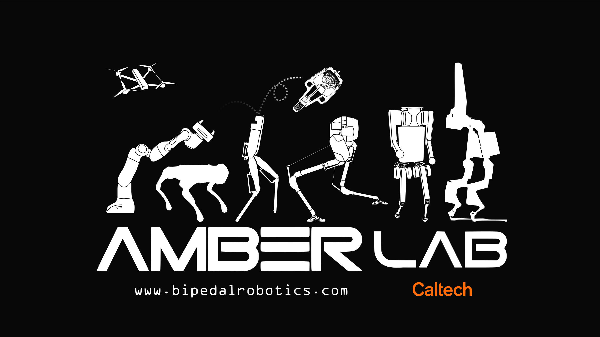
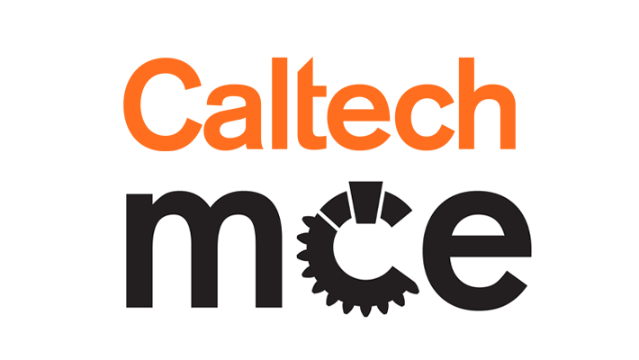
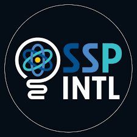

Experience

Robotics Research Fellow
Undergraduate research fellow in Advanced Mechanical Bipedal Experimental Robotics (AMBER) Lab. Currently working on project detailed here
 Caltech Mechanics | September 2025 - Present
Caltech Mechanics | September 2025 - Present
Teacher Assistant
I am serving as a Teaching Assistant for ME 12a – Mechanics I at Caltech, a core course in mechanical and civil engineering that covers statics and dynamics of rigid bodies, fluid statics, and the mechanics of materials. I support students through problem sets, recitations, and office hours, helping them build a strong foundation in continuum mechanics and apply theory to real engineering problems.
Phoenix Indian Medical Center, IHS | June 2025 - July 2025
Mechanical Engineering Intern
During my JRCOSTEP internship at the Phoenix Indian Medical Center, I worked with the facilities team to ensure the hospital’s infrastructure met strict healthcare codes and safety standards. My work included pressure relationship testing, HVAC inspections, and observing ductwork cleaning in compliance with ASHRAE 170 and Joint Commission requirements. I also shadowed a biomedical engineer to learn about the maintenance and troubleshooting of medical devices. Alongside these technical responsibilities, I gained hands-on experience with hospital safety drills, infection control (ICRA) training, and preventive maintenance practices in a high-stakes healthcare environment. You can read my report on energy-saving strategies for PIMC here

Teacher Assistant
As a Machine Shop Teaching Assistant at Caltech, I help students learn hands-on fabrication skills, from milling and lathing to waterjet and laser cutting. I guide them through interpreting engineering drawings, choosing the right tools, and building confidence with measurement and machining techniques. Beyond instruction, I make sure the shop runs safely and smoothly, supporting students as they turn designs into real prototypes.
 Caltech Arnold Lab | January 2024 - February 2025
Caltech Arnold Lab | January 2024 - February 2025
Chemical Engineering Research Fellow
I conducted research in the Arnold Lab at Caltech, exploring the enantioselective synthesis of β-amino acids as part of efforts toward sustainable drug development. My work involved applying directed evolution techniques to improve enzyme efficiency and selectivity, contributing to a published paper.
You can also read my final report here
This work was published in Angewandte Chemie — read the paper here
Caltech CLOVER Lab | June 2023 - September 2023
Bioengineering Research Fellow
As a research fellow in Caltech’s CLOVER Lab, I worked on advancing brain gene therapy through the directed evolution of adeno-associated viruses (AAVs). I contributed to experimental design and used Python to analyze sequencing and assay data, helping evaluate viral variants for improved therapeutic potential. Over the course of the project, I co-authored and presented a research poster summarizing our findings.

Genomics Research Fellow
As part of a summer science program, I worked in a team of three to study the evolution of Vibrio natriegens under antibiotic stress from nalidixic acid. Our research involved genomic DNA extraction, natural transformation, and PCR to identify genetic adaptations linked to resistance. At the end of the program, we co-authored and presented a research poster highlighting our findings and their implications for microbial evolution and antibiotic resistance.